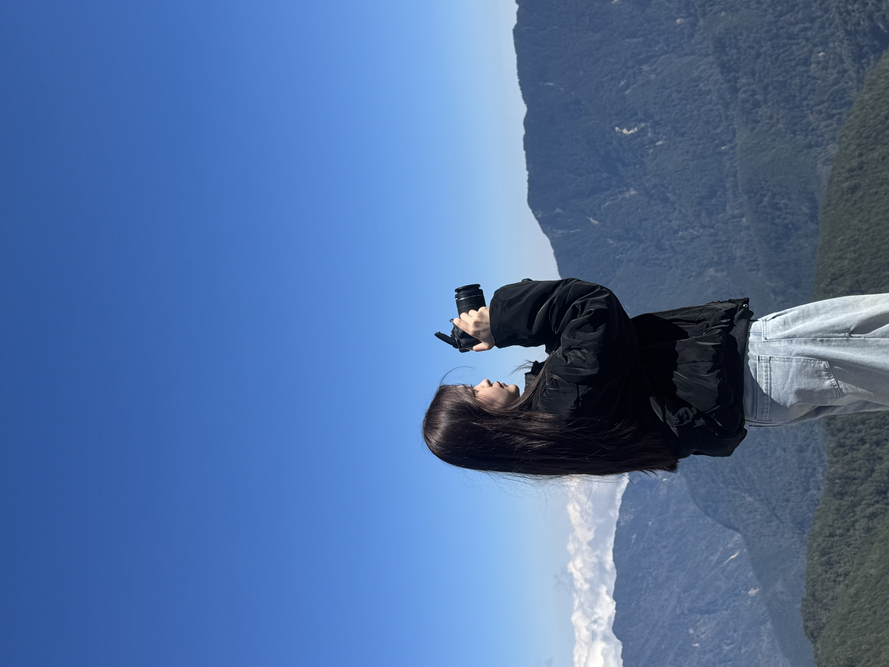

Production and Operations Intern/Staff
新北市, 台灣 | quanthuylinh214@gmail.com 個人網站
「本人目前為傳播系大二學生，現就職於 Garmin (台灣國際航電) 生產部門。在跨國企業的工作環境下，磨練出我高度的紀律性、細心度以及適應嚴格運作流程的能力。我具備良好的責任感，能確保各項任務準時完成。目前希望能尋求合適的工作機會，以兼顧學業與工作，並進一步提升實務技能。」
生產與營運實習生 Garmin (台灣國際航電) | 2024年12月 - 至今
擔任主要負責人，成功整合 CRM 系統並導入 HubSpot 自動化平台，將潛在客戶轉化率提升 15%。
數位多媒體系, 學士
2024年 - 2028年